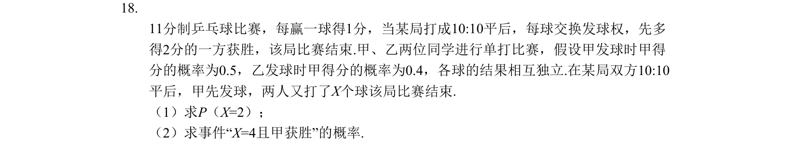
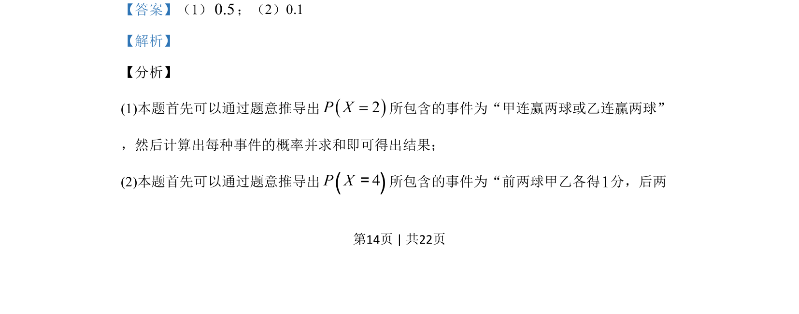

考点：概率 独立重复试验

11分制乒乓球10:10平局后概率问题，求P(X=2)及X=4且甲获胜的概率，各球结果相互独立。

📄 原 PDF 第 14 页：
素材/真题/吉林/2008-2024·（吉林）数学高考真题/2019年高考数学试卷（理）（新课标Ⅱ）（解析卷）.pdf
18. 11分制乒乓球比赛，每赢一球得1分，当某局打成10:10平后，每球交换发球权，先多 得2分的一方获胜，该局比赛结束.甲、乙两位同学进行单打比赛，假设甲发球时甲得 分的概率为0.5，乙发球时甲得分的概率为0.4，各球的结果相互独立.在某局双方10:10 平后，甲先发球，两人又打了X个球该局比赛结束. （1）求P（X=2）； （2）求事件“X=4且甲获胜”的概率.
【答案】（1）0.5；（2）0.1 【解析】 【分析】 (1)本题首先可以通过题意推导出2P X=所包含的事件为“甲连赢两球或乙连赢两球” ，然后计算出每种事件的概率并求和即可得出结果； (2)本题首先可以通过题意推导出()4P X=所包含的事件为“前两球甲乙各得1分，后两